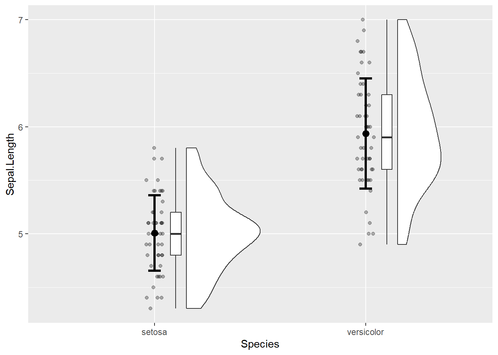

# Configuration du jeu de données pour l'exemple avec données non appariées.
# Il s'agit ici d'obtenir le jeu de données `iris` avec seulement deux modalités
# de la variable `Species`, cela en enlevant la modalité `virginica`.
iris_two_species <-
iris |>
filter(Species != "virginica") |>
mutate(Species = factor(Species, levels = c("setosa", "versicolor")))
head(iris_two_species) Sepal.Length Sepal.Width Petal.Length Petal.Width Species
1 5.1 3.5 1.4 0.2 setosa
2 4.9 3.0 1.4 0.2 setosa
3 4.7 3.2 1.3 0.2 setosa
4 4.6 3.1 1.5 0.2 setosa
5 5.0 3.6 1.4 0.2 setosa
6 5.4 3.9 1.7 0.4 setosa# Création du graphique
ggplot(data = iris_two_species, aes(x = Species, y = Sepal.Length)) +
geom_rain(point.args = rlang::list2(alpha = 0.3)) +
stat_summary(
geom = "errorbar",
fun.data = "mean_sdl",
fun.args = list(mult = 1),
linewidth = 1.1,
width = 0.06
) +
stat_summary(
geom = "point",
fun = "mean",
size = 3
)
